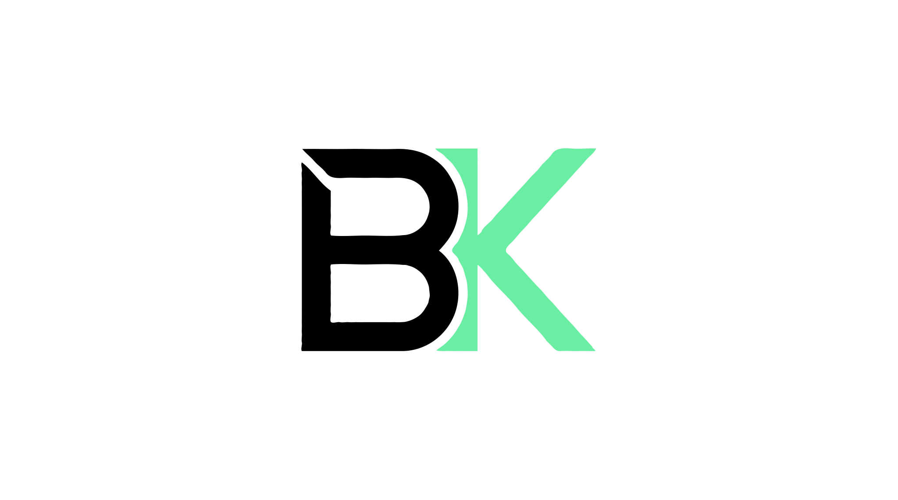

İnşaat mühendisliği, malzeme bilimi ve ürün yönetimi alanlarında 10+ yıllık tecrübeyle ulusal ve uluslararası dev projelere liderlik ediyorum.
Merhaba, ben Barış. ODTÜ İnşaat Mühendisliği mezunuyum. Kariyerim boyunca ulusal ve uluslararası büyük ölçekli projelerde (HS2, İzmir-İstanbul Otoyolu vb.) ürün yönetimi, Ar-Ge ve liderlik deneyimiyle görev aldım.
İnşaat mühendisliği ve malzeme bilimi alanlarındaki teknik uzmanlığımı, proje yönetimi ve stratejik liderlik vizyonuyla birleştiriyorum. Yaşam döngüsü yönetimi, inovatif malzeme geliştirme ve optimizasyon konularında uzmanlaştım.
Rakamlarla somut başarılar ve projelere sağladığım katma değer.
Profesyonel yolculuğumdan dönüm noktaları.
HS2 projesinde (6 TBM, 45 mil tünel) risk ve süreç analizlerini yöneterek proje gecikmelerini minimize ettim. Veri odaklı tahminleme ile proje süresinde %15 iyileşme ve maliyetlerde ciddi azalma sağladım.
500+ milyon € bütçeli metro ve konut projelerinde tüm koordinasyonu üstlendim. 100+ kişilik ekibi yöneterek ürün/çözüm tasarımlarını müşteri ihtiyaçlarına uygun hale getirdim.
IBRD ve IPARD destekli projelerde uluslararası ihale süreçlerini yönettim. Tramvay hattı ve altyapı projelerinde ürün/hizmet konumlandırma ve teknik sözleşme yönetimi gerçekleştirdim.
İzmir-İstanbul otoyolu 45 km bölümünde teknik ürün/çözüm optimizasyonu yaptım. Statik projeleri yeniden tasarlayarak %27 maliyet avantajı ve 318 ton çelik tasarrufu sağladım. 29 köprü projesini 5 ay erken tamamladım.
3 büyük tasarım hatasını erken tespit ederek yapısal riskleri önledim. Kriz döneminde uyguladığım maliyet azaltma stratejileri ile %12 tasarruf sağladım.
Liderlik ettiğim dev ölçekli çalışmalar.
İngiltere'nin en büyük altyapı projesinde 6 TBM ve 45 mil tünel yönetimi.
45 km'lik bölümde %27 maliyet avantajı sağlayan statik tasarım optimizasyonu.
500+ milyon € bütçeli, 100+ kişilik ekiplerle yönetilen dev altyapı projeleri.
IBRD ve IPARD destekli, uluslararası ihale süreçleri yönetilen tramvay projesi.
Akademik temelim ve mesleki yetkinliklerim.
İnşaat mühendisliği ve malzeme bilimi alanında ileri düzey araştırmalar.
İnovatif malzeme geliştirme ve nanoteknoloji uygulamaları.
İleri yapısal analiz ve mühendislik yönetimi.
Temel mühendislik, yapı statiği ve betonarme tasarımı.
Birlikte sağlam bir şeyler inşa edelim.
Projeleriniz veya iş birlikleri için bana ulaşabilirsiniz.